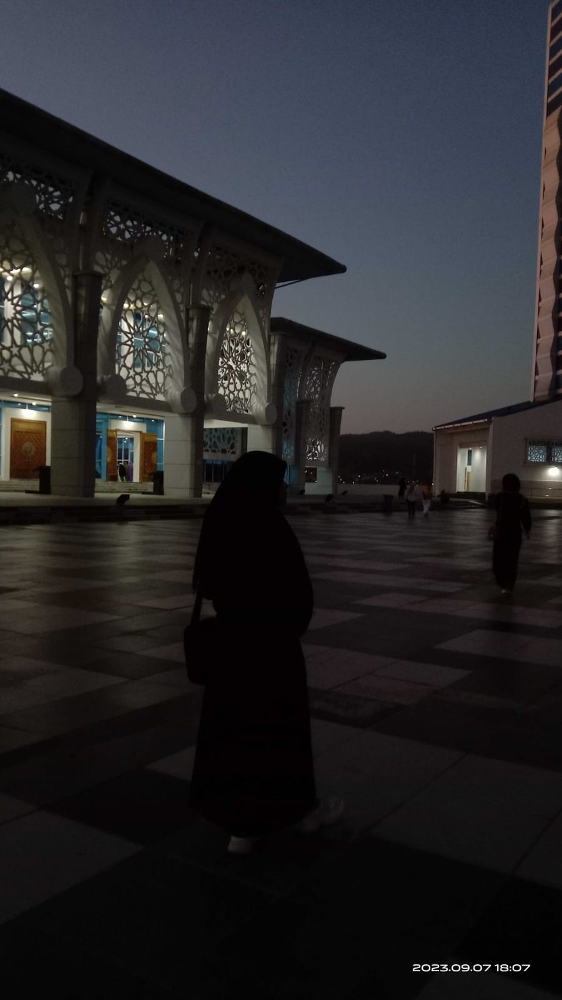

Wulan Febarianti
|
Hai!Saya suka membaca
N

Tentang saya
Perkenalkan Saya Wulan Febrianti. Mahasiswa Dari Program Studi Informatika
- Pendidikan Universitas Muhammadiyah Maumere\ Informatika
- Lokasi Maumere, Nusa Tenggara Timur
- Hoby Membaca, Mendengarkan musik dan nonton
Skill
Word\excel70%
Desain60%
Edit50%
Kontak
Tertarik bekerja sama atau sekadar ingin menyapa? Hubungi saya lewat: